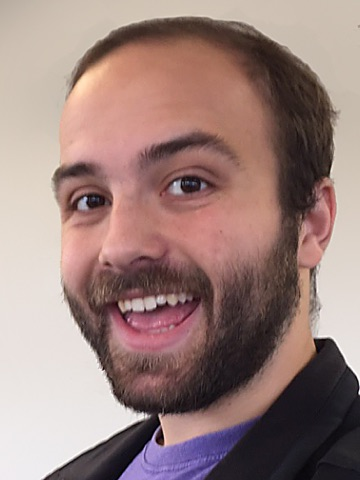
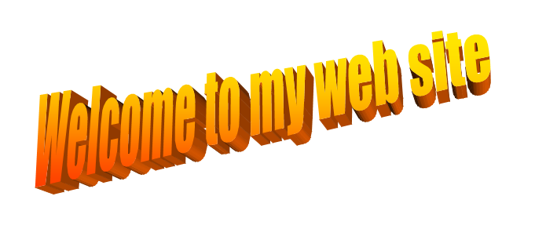
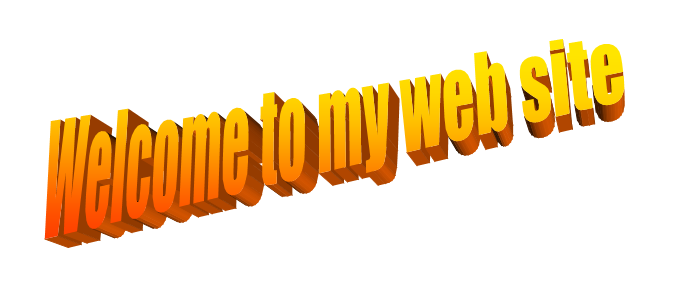

Aaron Traylor
Aaron Traylor
Contact
Premise: All students at Brown University have a "brown.edu" email address.
Hypothesis: I have a "brown.edu" email address.
Totally tangentially, my email address is aaron_traylor@<mask>.edu.
Bio
I am a fourth year PhD student studying computer science at Brown University . I am working with Professor Ellie Pavlick in the LUNAR (Language UNderstanding And Representation) Lab, and I am also advised by Professor Roman Feiman of the Brown Language and Thought Lab.
Previously, I worked in Professor Andrew McCallum's Information Extraction and Synthesis Laboratory and collaborated with Nicholas Monath and Rajarshi Das .
Education
Brown University. 2018-Ongoing. Computer Science.
University of Massachusetts Amherst. 2014-2018. BS. Computer Science.
Publications
Aaron Traylor, Roman Feiman, and Ellie Pavlick. AND does not mean OR: Using Formal Languages to Study Language Models’ Representations. ACL 2021. PDF.
Aaron Traylor, Roman Feiman, and Ellie Pavlick. Transferring Representations of Logical Connectives. NALOMA workshop at ACL 2020. PDF.
Derek Tam, Nicholas Monath, Ari Kobren, Aaron Traylor, Rajarshi Das, Andrew McCallum.Optimal transport-based alignment of learned character representations for string similarity. ACL 2019. PDF
Brandon Prickett, Aaron Traylor, and Joe Pater. Seq2Seq Models With Dropout Can Generalize Reduplication. SIGMORPHON at EMNLP 2018. PDF
Aaron Traylor*, Nicholas Monath*, Rajarshi Das, and Andrew McCallum. Learning String Alignments for Entity Aliases AKBC WS at NIPS 2017. (* equal contribution) [PDF]
Haw-Shiuan Chang, Abdurrahman Munir, Ao Liu, Johnny Tian-Zheng Wei, Aaron Traylor, Ajay Nagesh, Nicholas Monath, Patrick Verga, Emma Strubell, and Andrew McCallum. Extracting Multilingual Relations under Limited Resources: TAC 2016 Cold-Start KB construction and Slot-Filling using Compositional Universal Schema. NIST TAC KBP Workshop 2016. Notebook version [pdf]
 
